| City | SFH Single-Family House |
TH Terraced House |
MFH Multi-Family House |
AB Apartment Block |
|---|---|---|---|---|
| Amsterdam 8,019 bld / 36,569 img | 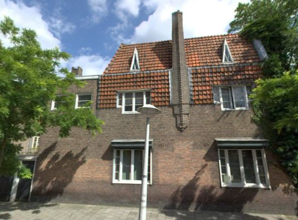 |
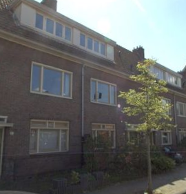 |
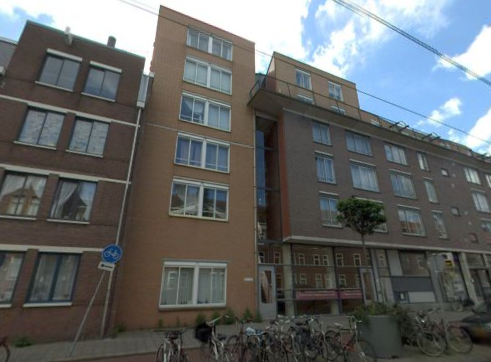 |
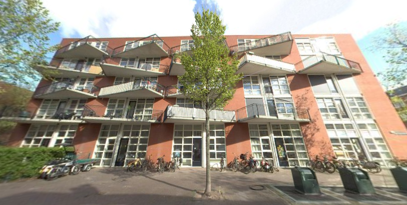 |
| Rotterdam 1,424 bld / 7,366 img | 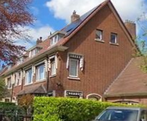 |
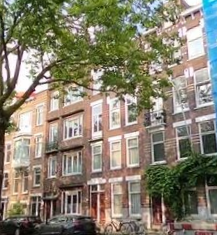 |
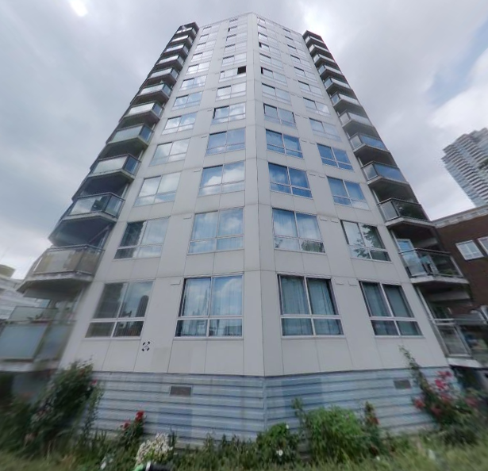 |
|
| Utrecht 488 bld / 2,233 img | 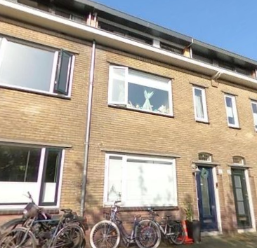 |
|||
| Delft 173 bld / 1,070 img | 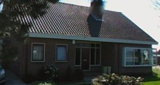 |
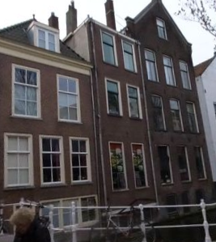 |
no MFH in the Delft subset |
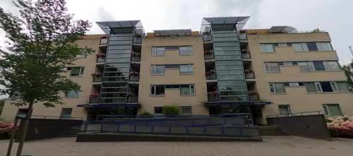 |
Example street-view crops from the dataset, one per city × TABULA size class. Images are per-building crops produced by the OpenFACADES-based acquisition pipeline (Mapillary panorama → isovist pairing → detection → perspective reprojection → quality filter; §3.2.2); size-class labels are registry ground truth (EP-Online Gebouwtype mapped per Table 3.5), not model predictions. The montage also illustrates dataset skew: the pool is AB-dominated (94% of Amsterdam images), MFH is rare (243 images across three cities, none in Delft), and crop quality varies with camera distance and viewing angle (e.g., the Utrecht MFH example is the best available view of that class in that city). Imagery © Mapillary contributors (CC BY-SA 4.0).